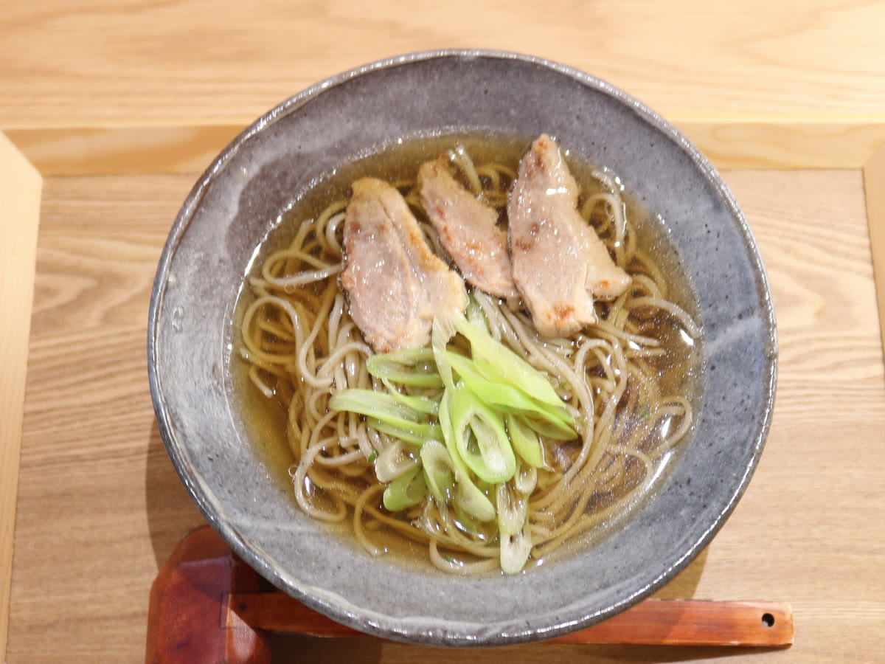
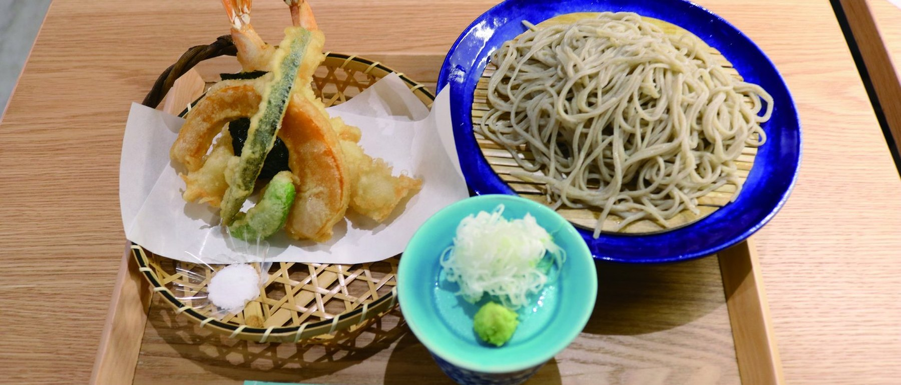
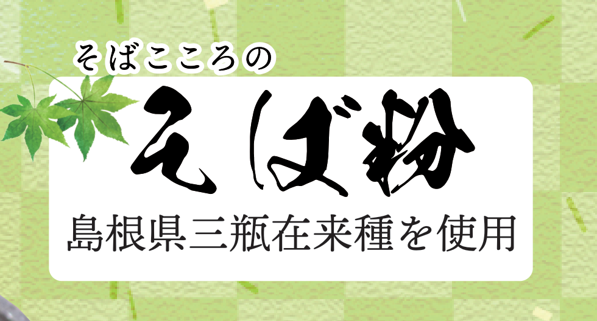
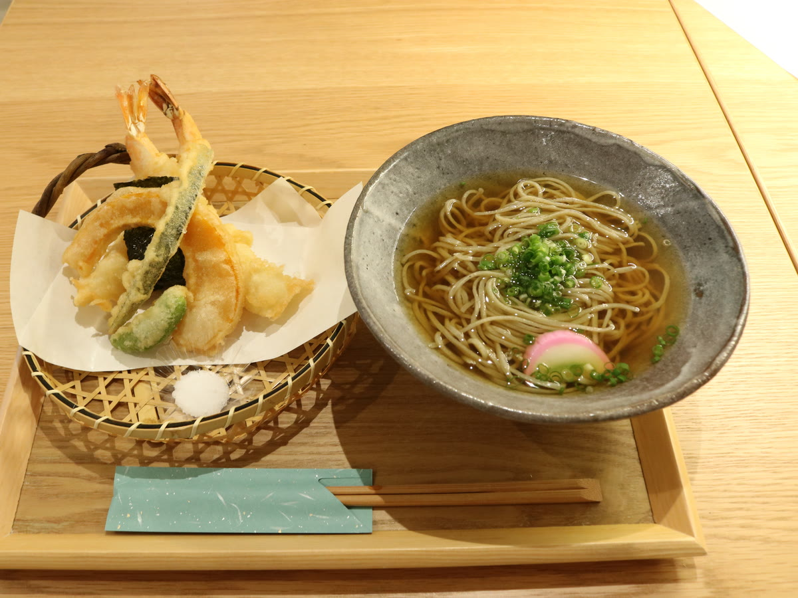
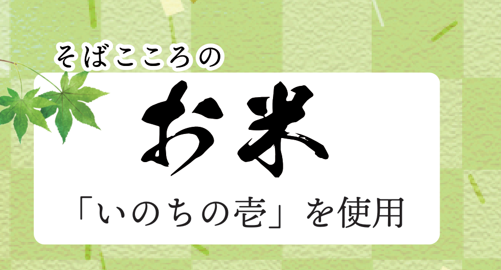
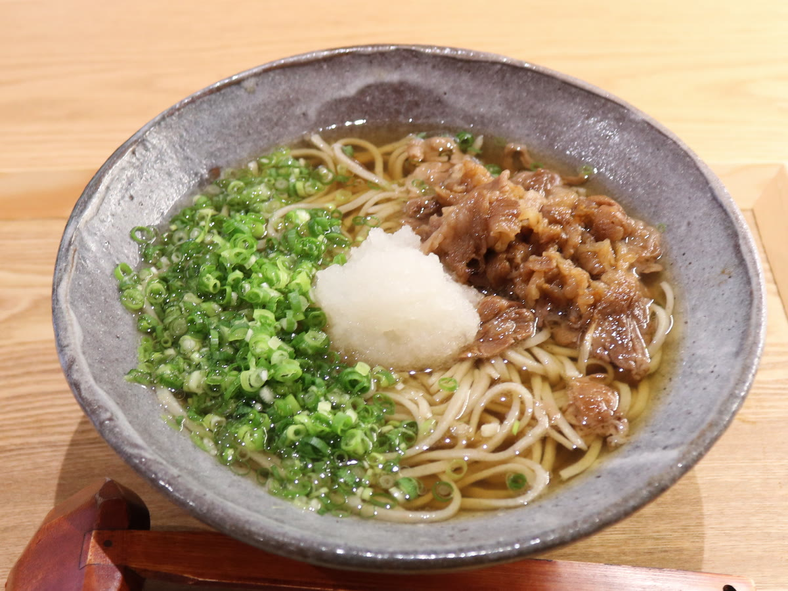
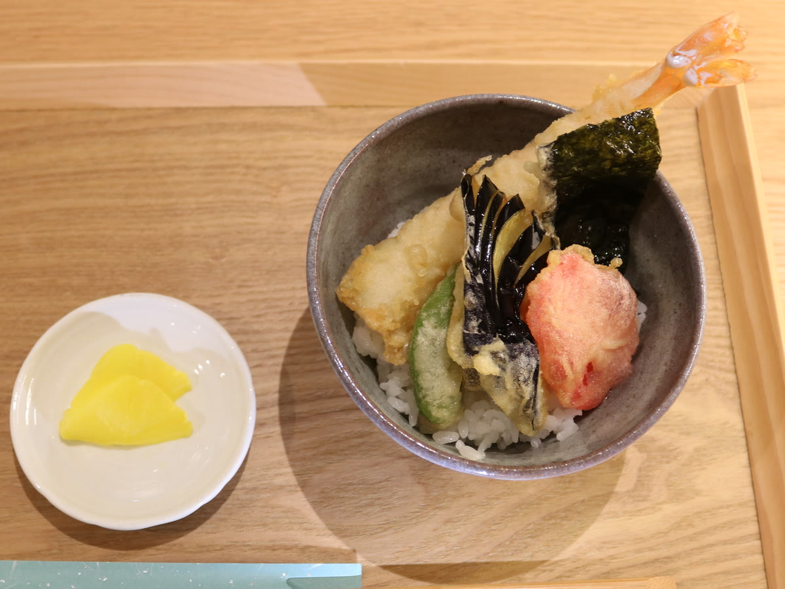

鴨南蛮
1,650円 税込
温かいお蕎麦の定番。朝打ち自家製麺（1人前）。


猪名川町・日生中央サピエ1階
そば粉も、お米も、選んだものを使っています。

そば粉は島根県三瓶の在来種を使っています。小粒で香りが高く、甘みの濃い希少な在来種です。

お蕎麦は毎朝、この店で打っています。打ちたてならではの香りと喉ごしを、ぜひそのまま召し上がってください。

丼もののお米には「いのちの壱」を使っています。粒が大きく、噛むほどに甘みの出るお米です。ミニ丼は香の物付きで、お蕎麦とご一緒にどうぞ。

1,650円 税込
温かいお蕎麦の定番。朝打ち自家製麺（1人前）。

1,000円 税込
お肉とおろしをのせた一杯。朝打ち自家製麺（1人前）。

550円 税込
ミニ丼、香の物付き。お蕎麦と一緒に頼まれる方が多いお品です。